1. COMPONENTES DE MICROCOMPUTADORES
- 1.1 Componentes internos
- 1.1.1 CPU
- 1.1.2 Armazenamento
- 1.1.3 Memória
- 1.1.4 Fonte de alimentação
- 1.2 Componentes externos
- 1.2.1 Teclado
- 1.2.2 Monitor de vídeo
- 1.2.3 Mouse
- 1.2.4 Impressora
- 1.2.5 Plotter
- 1.2.6 Scanner
- 1.2.7 Gabinete
- 1.2.8 Web Cam
- 1.2.9 Caixas de som
- 1.2.10 Microfone
- 1.2.11 Head Set
- 1.3 Interfaces de entrada e saída
- 1.3.1 Interfaces sem fio
- 1.3.2 Áudio
- 1.3.3 Rede (Ethernet)
- 1.3.4 VGA
- 1.3.5 HDMI
- 1.3.6 USB
2. GRANDEZAS ELÉTRICAS
- 2.1 Potência elétrica
- 2.2 Tensão elétrica
- 2.3 Corrente elétrica
3. UNIDADES DE MEDIDA UTILIZADAS NA INFORMÁTICA
- 3.1 Capacidade de armazenamento
- 3.1.1 bit
- 3.1.2 Byte
- 3.1.3 Múltiplos
- 3.2 Frequência
- 3.2.1 Hertz
- 3.2.2 Múltiplos
- 3.3 Largura de banda
- 3.3.1 Capacidade do canal
- 3.3.2 bit/seg (bps)
- 3.3.3 Múltiplos
- 3.4 Taxa de transferência
- 3.4.1 Tráfego no canal
- 3.4.2 Byte/seg (Bps)
- 3.4.3 Múltiplos
CPU
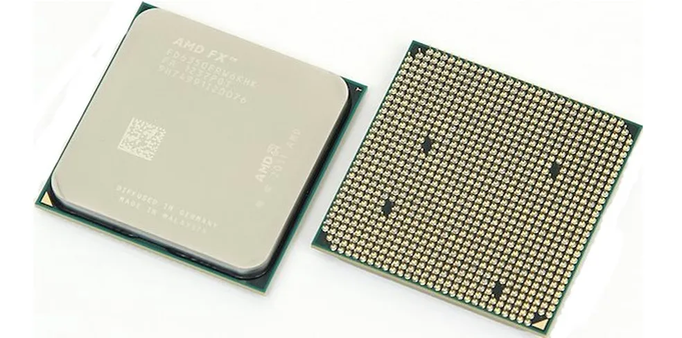
A CPU é o principal componente que processa os sinais e torna a computação possível. Ela atua como o cérebro de qualquer dispositivo de computação. Ela busca instruções na memória, executa as tarefas necessárias e envia a saída de volta para a memória.
Armazenamento
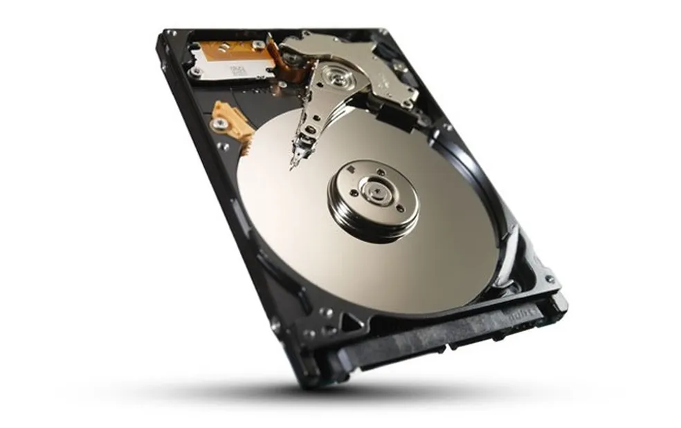
O armazenamento (ou armazenagem) de dados de computador é uma tecnologia que consiste em componentes de computador e mídia de gravação que são usados para reter dados digitais. É uma função central e componente fundamental dos computadores.
Memória
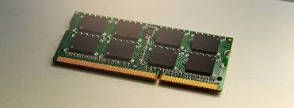
Memória de Acesso Aleatório ou Random Access Memory, em inglês — permite a leitura e a escrita de arquivos. Ou seja, a sua função é possibilitar que o processador tenha acesso imediato aos dados que deseja, contribuindo para uma maior rapidez e capacidade de resposta das solicitações.
Fonte de alimentação

Teclado
Um teclado é um dispositivo que apresenta o conjunto das teclas de diversos aparelhos, máquinas e instrumentos. De um modo geral, o teclado permite o controlo ou o comando do aparelho em questão.
Monitor de vídeo
 Um monitor é um dispositivo de saída do computador, cuja função é transmitir informação ao utilizador através da imagem.
Um monitor é um dispositivo de saída do computador, cuja função é transmitir informação ao utilizador através da imagem.
Mouse
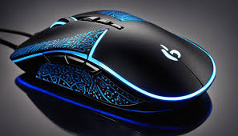
É um dispositivo de mão que controla o movimento de um ponteiro na tela (normalmente a imagem de uma seta). Existem diversos tipos de mouse, mas o modelo mais comum tem o formato de um ratinho, por isso o nome em inglês: "mouse". Foi criado para facilitar a interação com o computador.
Impressora
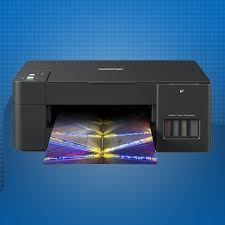
Impressora ou dispositivo de impressão é um periférico que, quando conectado a um computador ou a uma rede de computadores, tem a função de dispositivo de saída, imprimindo textos, gráficos ou qualquer outro resultado de uma aplicação.
Plotter
Uma impressora plotter é tradicionalmente conhecida apenas como “plotter”. No passado, utilizava-se uma caneta ou marcador para desenhar linhas em uma extensa folha de papel para renderizar um desenho com a ajuda de um computador ou outros programas esquemáticos.May 24, 2022
Scanner
é um periférico de entrada responsável por digitalizar imagens, fotos e textos impressos para o computador, um processo inverso ao da impressora. Ele faz varreduras na imagem física por meio de leitura óptica, gerando impulsos elétricos através de um captador de reflexos.
Gabinete
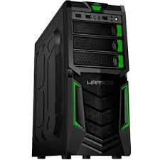
O gabinete é aquela caixa retangular que protege todos os componentes internos do computador, como a placa-mãe, placa de vídeo e o HD. Como eu te falei, ele é bem importante porque algumas peças do computador são muito delicadas e não podem sofrer nenhum tipo de batida ou ter acúmulo de pó.
Web Cam
 Uma webcam é uma câmara de vídeo que está, em regra, ligada diretamente a um computador. É um dispositivo de hardware de entrada de sinal (input), cuja função é a captação de imagem e vídeo. Estes dispositivos podem ser usados para realizar videoconferência ou transmitir ininterruptamente determinados eventos.
Uma webcam é uma câmara de vídeo que está, em regra, ligada diretamente a um computador. É um dispositivo de hardware de entrada de sinal (input), cuja função é a captação de imagem e vídeo. Estes dispositivos podem ser usados para realizar videoconferência ou transmitir ininterruptamente determinados eventos.
Caixas de som
 Caixa acústica ou Caixa de Som, no Brasil, ou Coluna, em Portugal, é uma caixa construída em madeira, MDF ou plástico, contendo uma abertura para um amplificador sonoro (ou alto-falante), melhorando a reprodução sonora.
Caixa acústica ou Caixa de Som, no Brasil, ou Coluna, em Portugal, é uma caixa construída em madeira, MDF ou plástico, contendo uma abertura para um amplificador sonoro (ou alto-falante), melhorando a reprodução sonora.
Microfone
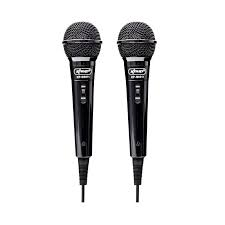
Os microfones são equipamentos que transformam energia sonora em energia elétrica, e isso ocorre por meio de processos de indução eletromagnética. Os microfones possuem a finalidade de transformar ondas sonoras em sinais elétricos, que serão dirigidos para amplificadores, gravadores ou algum outro tipo de equipamento.
Head Set
 O headset é um modelo de fone de ouvido mais robusto que acompanha, ainda, um microfone (fixo, destacável, móvel ou retrátil). Ele pode ser usado por profissionais que precisam falar ao telefone enquanto digitam, por exemplo, mas é especialmente utilizado pelos gamers.
O headset é um modelo de fone de ouvido mais robusto que acompanha, ainda, um microfone (fixo, destacável, móvel ou retrátil). Ele pode ser usado por profissionais que precisam falar ao telefone enquanto digitam, por exemplo, mas é especialmente utilizado pelos gamers.
Interfaces sem fio
 Uma interface de rede sem fio é um componente eletrônico que permite a comunicação entre dispositivos eletrônicos sem a necessidade de fios físicos.
Uma interface de rede sem fio é um componente eletrônico que permite a comunicação entre dispositivos eletrônicos sem a necessidade de fios físicos.
Áudio
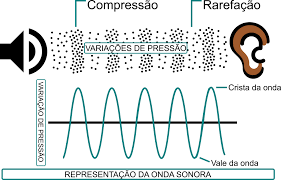
O conceito de áudio é usado para nomear a técnica que permite gravar, transmitir e reproduzir sons.
Rede (Ethernet)
.jpg) Ethernet é a tecnologia que permite a conexão física entre dispositivos como computadores, impressoras, switches e roteadores em redes locais. Por ser escalável e de fácil manutenção, esse padrão é amplamente usado para conectar dispositivos através de cabos para a transmissão de dados.
Ethernet é a tecnologia que permite a conexão física entre dispositivos como computadores, impressoras, switches e roteadores em redes locais. Por ser escalável e de fácil manutenção, esse padrão é amplamente usado para conectar dispositivos através de cabos para a transmissão de dados.
VGA
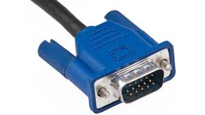
VGA é a sigla para Video Graphics Array (ou Matriz Gráfica para Vídeo, em português), que identifica o padrão para displays gráficos desenvolvido pela IBM em 1986, e usado pela primeira vez no ano seguinte, com a linha de computadores pessoais IBM PS/2.
HDMI
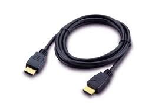
é uma tecnologia de conexão por cabo que transmite vídeo e áudio de computadores, celulares e tablets a TVs, monitores ou projetores. A tecnologia pode transmitir conteúdo em resoluções como 4K e 8K.
USB
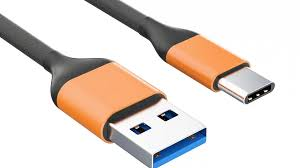
USB (Universal Serial Bus) é um padrão de conexão por cabo que permite transmissão de dados entre dispositivos variados, como celulares, PCs, TVs e acessórios. As especificações da tecnologia também permitem que uma conexão USB forneça alimentação elétrica ou faça recarga de bateria.
Potência elétrica
 otência elétrica é a energia elétrica que é transformada a cada segundo. A unidade de medida de potência elétrica é o watt, que equivale a joule por segundo.
otência elétrica é a energia elétrica que é transformada a cada segundo. A unidade de medida de potência elétrica é o watt, que equivale a joule por segundo.
Tensão elétrica
 A tensão elétrica ou diferença de potencial (ddp) é a quantidade de energia gerada por pilhas ou baterias que move cargas elétricas para o restante do circuito elétrico, sendo de suma importância para o funcionamento dos circuitos. Ela é medida em Volt e calculada por meio da primeira lei de Ohm.
A tensão elétrica ou diferença de potencial (ddp) é a quantidade de energia gerada por pilhas ou baterias que move cargas elétricas para o restante do circuito elétrico, sendo de suma importância para o funcionamento dos circuitos. Ela é medida em Volt e calculada por meio da primeira lei de Ohm.
Corrente elétrica
 A corrente elétrica é o fluxo ordenado de cargas elétricas, que se movem dentro de um condutor elétrico sólido ou em soluções iónicas, gerando a energia elétrica que conhecemos.
A corrente elétrica é o fluxo ordenado de cargas elétricas, que se movem dentro de um condutor elétrico sólido ou em soluções iónicas, gerando a energia elétrica que conhecemos.
bit
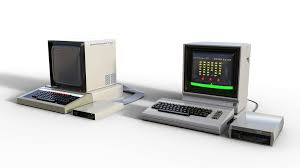
O bit (simplificação para dígito binário, em inglês, binary digit) é a menor unidade de informação que pode ser armazenada ou transmitida, usada na Computação e na Teoria da Informação. Um bit pode assumir somente 2 valores: 0 ou 1, corte ou passagem de energia, respectivamente.
Byte
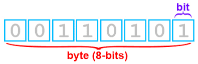
O Byte é a reunião de oito Bits. Esta reunião recebe o nome de Octeto e é utilizada para dar instruções aos computadores. Ambos, Bits e Bytes, ocorrem numa escala imperceptível em nosso cotidiano.
Múltiplos
Os múltiplos são os resultados das multiplicações entre dois números inteiros. Assim, a partir de um número inteiro, ao multiplicá-lo por outros, obtém-se o conjunto de seus múltiplos. 36 é múltiplo tanto do 12 quanto do 3, pois é o resultado da multiplicação entre eles.
Hertz
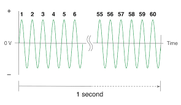
A frequência é a velocidade que a corrente muda de direção por segundo. É medida em hertz (Hz), uma unidade de medição internacional onde 1 hertz é igual a 1 ciclo por segundo. Hertz (Hz) = Um hertz é igual a um ciclo por segundo. Ciclo = Uma onda completa de corrente alternada ou de tensão.
Múltiplos
Os múltiplos são os resultados das multiplicações entre dois números inteiros. Assim, a partir de um número inteiro, ao multiplicá-lo por outros, obtém-se o conjunto de seus múltiplos.
Capacidade do canal
 Capacidade de canal refere-se à taxa máxima na qual as informações podem ser transmitidas por um canal de comunicação com alta confiabilidade e erros mínimos, normalmente medida em bits por segundo (bps).
Capacidade de canal refere-se à taxa máxima na qual as informações podem ser transmitidas por um canal de comunicação com alta confiabilidade e erros mínimos, normalmente medida em bits por segundo (bps).
bit/seg (bps)
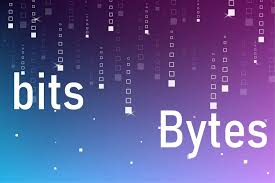
O Bps, ou Bits por segundo, é uma medida fundamental para quantificar a taxa de transmissão de dados em sistemas de comunicação. É uma métrica essencial para avaliar a eficiência e a velocidade de transferência de informações em redes de computadores, internet e outros dispositivos eletrônicos.
Múltiplos
Os múltiplos são os resultados das multiplicações entre dois números inteiros. Assim, a partir de um número inteiro, ao multiplicá-lo por outros, obtém-se o conjunto de seus múltiplos.
Tráfego no canal
 Canais de tráfego são essencialmente, as portas de entrada para sua loja. Mas antes de escolher qual o melhor, é necessário entender quais os tipos: Orgânico: Tráfego de resultado do Google/Bing. É um dos mais importantes, por isso é necessário um SEO bem configurado.
Canais de tráfego são essencialmente, as portas de entrada para sua loja. Mas antes de escolher qual o melhor, é necessário entender quais os tipos: Orgânico: Tráfego de resultado do Google/Bing. É um dos mais importantes, por isso é necessário um SEO bem configurado.
Byte/seg (Bps)
Descrição. O BPS (Bits Por Segundo) é uma unidade de medida utilizada para quantificar a taxa de transferência de dados em um sistema de comunicação. Essa métrica indica a quantidade de bits que podem ser transmitidos ou recebidos em um segundo.
Múltiplos
 Os múltiplos são os resultados das multiplicações entre dois números inteiros. Assim, a partir de um número inteiro, ao multiplicá-lo por outros, obtém-se o conjunto de seus múltiplos.
Os múltiplos são os resultados das multiplicações entre dois números inteiros. Assim, a partir de um número inteiro, ao multiplicá-lo por outros, obtém-se o conjunto de seus múltiplos.